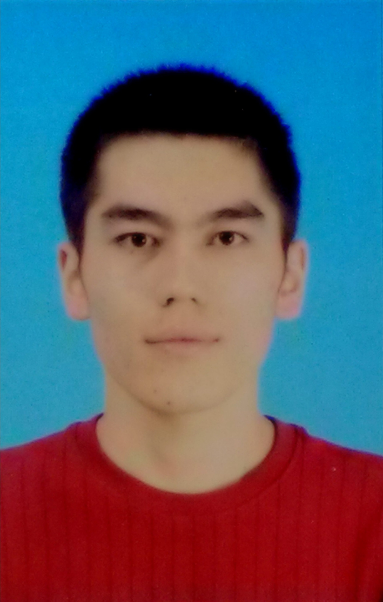

|
 |
PhD
Senior Software Development Engineer, Microsoft
Address: 8308, Building 2, No. 5, Danling Street, Haidian District, Beijing, China
Email: jiayingli@microsoft.com (official), lijiaying1989@gmail.com (personal and perferred)
Wechat: lijiayinghahaha |
Curriculum Vitae(might be outdated.)
Currently, I am working for Bing Platform team in Microsoft, China. Before that, I was a research scientist in SCIS, SMU (Singapore Management University), Singapore, a research fellow in ISTD, SUTD (Singapore University of Technology and Design). I got my PhD degree from SUTD, and my Bachelor degree from Nankai University, China.
During my early academic exploration years, I had great honors to be supervised by Prof. Sun Jun (SUTD, Singapore, currently at SMU, Singapore). I also had a wonderful experience when visiting Prof. Su Zhendong (UC Davis, US, currently at ETH Zurich, Switzerland)
Software Engineering, Formal Verification, Program Analysis, Artifitial Intelligence
My primary research focuses on the correctness of software systems, including classic computer programs, smart contracts (programs running on the block chain infrastructures), and artificial intelligence systems such as neural networks. I also have a broad interest in both the theoretic and practical aspects of software analysis, testing, debugging and verification. My vision is to develop new theories and pratices that can indeed help practitioners build trustworthy and high-quality software systems.
I welcome all the collabration from academia and industrials. Send me an email if you are interested.
ReLU Hull Approximation Zhongkui Ma, Jiaying Li, Guangdong Bai The 51st ACM SIGPLAN Symposium on Principles of Programming Languages (POPL), 2024
Towards an Effective and Interpretable Refinement Approach for DNN Verification Jiaying Li, Guangdong Bai, Long H. Pham, Jun Sun The 23rd IEEE International Conference on Software Quality, Reliability, and Security (QRS), 2023
A Comprehensive Study of Real-World Bugs in Machine Learning Model Optimization Hao Guan, Ying Xiao, Jiaying Li, Yepang Liu, Guangdong Bai The 45th IEEE/ACM International Conference on Software Engineering (ICSE), 2023
Verification Assisted Gas Reduction for Smart Contracts Best Paper Bo Gao, Siyuan Shen, Ling Shi, Jiaying Li, Jun Sun, Lei Bu The 28th Asia-Pacific Software Engineering Conference (APSEC) 2021
sVerify: Verifying Smart Contracts through LazyAnnotation and Learning Bo Gao, Ling Shi, Jiaying Li, Jialiang Chang, Jun Sun, Zijiang Yang The 10th International Symposium On Leveraging Applications of Formal Methods, Verification and Validation (ISoLA) 2021
Deep Clustering by Gaussian Mixture Variational Autoencoders with Graph Embedding Linxiao Yang, Ngai-Man Cheung, Jiaying Li, Jun Fang The International Conference in Computer Vision (ICCV), 2019
Classification-based Parameter Synthesis for Parametric Timed Automata Jiaying Li, Jun Sun, Bo Gao and '{E}tienne Andr'{e} The 19th International Conference on Formal Engineering Methods (ICFEM), 2017
Automatic Loop-invariant Generation and Refinement through Selective Sampling Jiaying Li, Jun Sun, Li Li, Quang Loc Le and Shang-Wei Lin The 32nd IEEE/ACM International Conference on Automated Software Engineering (ASE), 2017
Scaling BDD-based Timed Verification with Simulation Reduction Truong Khanh Nguyen,Tian Huat Tan, Jun Sun, Jiaying Li, Yang Liu, Manman Chen, Jin Song Dong, The 18th International Conference on Formal Engineering Methods (ICFEM), 2016
An Invariant Inference Framework using Active Learning and SVMs Jiaying Li The 20th International Conference on Engineering of Complex Computer Systems (ICECCS), 2015
Boosting DeepPoly with Abstraction Refinement for Neural Network Verification Long H. Pham, Jiaying Li, Jun Sun
SOCRATES: Towards a Unified Platform for Neural Network Verification Long H. Pham, Jiaying Li, Jun Sun
Learning Invariants with Dynamic States Partitioning Jiaying Li, Jun Sun